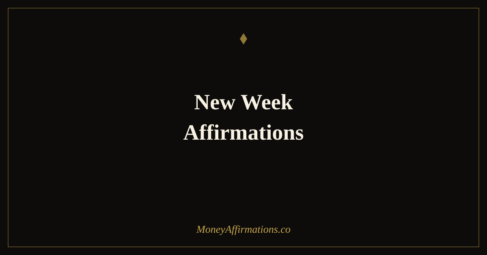

New Week Affirmations: 30 Statements for a Powerful Start Every Monday

Monday has a reputation it does not entirely deserve. For people without a consistent intention-setting practice, the beginning of the week can feel like a resumption of unfinished pressure rather than a genuine fresh start. These 30 new week affirmations are designed to change that. Used every Monday morning — or Sunday evening if you prefer to begin the week in a forward-leaning posture — they direct attention toward what is possible in the coming days, establish the financial and personal intentions that will guide your decisions, and prime the mindset needed to work with focus, confidence, and a genuine sense of momentum. The week does not determine how it begins; you do. And how it begins has a substantial influence on how it unfolds.
What are new week affirmations?
New week affirmations are present-tense intention statements designed for the start of each working week. They address the specific beliefs, attitudes, and expectations that shape how you approach your work, your finances, and your daily choices across five or seven days. Unlike monthly affirmations that focus on larger cycles and goals, weekly affirmations are closer to the ground — they deal with energy, focus, consistency, and the moment-by-moment financial behaviours that determine whether the week adds to your progress or drains it.
If you are looking for a foundation practice that runs beneath the weekly rhythm, the prosperity affirmations collection provides the daily grounding that new week work builds upon.
30 new week affirmations
- I welcome this new week with a clear mind, a purposeful heart, and the energy to act on my intentions.
- I set my financial focus for this week and I follow through with steady, consistent effort.
- I am determined and disciplined this week, especially on the days when it would be easier not to be.
- I earn well this week because I show up fully and give genuine value to everything I do.
- I manage my money thoughtfully this week, making decisions I will be satisfied with by Friday.
- I release last week's difficulties and meet this week with fresh determination and open expectation.
- I am focused on the financial priorities that matter most this week, and I protect my time accordingly.
- I attract good opportunities this week by showing up as my most capable and committed self.
- I approach every financial decision this week from a position of calm confidence rather than anxiety.
- I am productive and purposeful this week, and I end it further along than I began.
- I bring my sharpest thinking to my most important work this week, and the results reflect that.
- I take at least one meaningful step toward my financial goals every single day this week.
- I handle challenges this week with the resourcefulness of someone who trusts in their own capability.
- I am consistent with my financial habits this week because consistency is the engine of real progress.
- I honour my commitments to myself this week, financial and otherwise, without negotiation.
- I find clarity and momentum in my work this week that carries me through to a strong finish.
- I am grateful for this week and the opportunity it holds to grow, to earn, and to move forward.
- I stay present and intentional this week rather than drifting through the days reactively.
- I invest my best energy in the activities that produce the most value this week.
- I remain calm and productive when this week brings the unexpected, as every week eventually does.
- I end this week proud of the financial choices I made and the actions I committed to.
- I trust that this week holds exactly the opportunities I need to make meaningful progress.
- I communicate with clarity and confidence this week in every professional and financial interaction.
- I am building financial momentum with every week that I show up and do the work honestly.
- I protect my focus this week from distractions that would pull me away from what truly matters.
- I am the kind of person who has a great week because I choose to build it deliberately from the start.
- I approach Monday with the same energy I want to carry into Friday, purposeful and unhurried.
- I do something this week that moves me measurably closer to the financial life I am creating.
- I am patient with the pace of my progress and confident in the direction I am heading this week.
- This week, I choose focus over distraction, intention over reaction, and growth over comfort.
How to use these affirmations
The most effective structure is to read your chosen affirmations before any reactive activity on Monday morning — before email, before social media, before news. Choose six to eight statements that align with your specific financial or professional goals for the week. Read them aloud rather than silently; the act of speaking engages auditory processing pathways and produces a stronger emotional response than reading alone.
After your affirmations, spend three minutes identifying the two or three most important financial or income-related actions you intend to complete this week. This step bridges mindset to execution: the affirmations set the belief, and the concrete intentions give it direction. Write them down — physically or digitally — rather than holding them only in working memory.
At the end of the week, spend two minutes noting what you followed through on. This evidence-gathering practice builds genuine self-trust over time, which is the underlying resource that all financial progress depends on.
Why weekly intention rituals outperform daily to-do lists for financial behaviour
Daily to-do lists are excellent for task management but limited as tools for financial behaviour change. They address what to do, but they do not address why you are doing it, what beliefs govern your approach, or how you are likely to feel and respond when the week becomes difficult — as it inevitably will. Weekly intention rituals, by contrast, operate at the level of values, identity, and direction, which is the level where financial behaviour is actually determined.
Research on implementation intentions — plans that specify not just what you will do but when, where, and under what circumstances — shows that people who begin their week with a clear and emotionally anchored intention for how they will approach financial decisions are significantly more likely to follow through on those decisions under pressure than those who begin with only a task list.
There is also a temporal advantage to weekly intention-setting. The week is a human-scale unit of time: long enough to contain meaningful progress, short enough that every action within it feels consequential. When you begin each week with a clear sense of purpose and aligned belief, the accumulated effect across fifty-two weeks of intentional living produces financial change that is both measurable and compounding. The people who build lasting financial security are rarely those with the most sophisticated strategies; they are the ones who show up consistently, week after week, with a clear intention and the self-belief to act on it.
Tips to make them work faster
- Use them before reactive input. The window before you check email or messages on Monday morning is the highest-leverage moment in the week for intention-setting. Protect it. Even ten minutes used this way sets a fundamentally different tone than reacting to the first demand that arrives.
- Identify your one financial priority for the week. Alongside your affirmations, name the single most important financial action or decision you will complete this week. Having one clear priority cuts through decision fatigue and ensures that at minimum, the most valuable thing gets done.
- Pair with a brief Sunday review. Five minutes on Sunday evening reviewing what you achieved last week and naming your intentions for the one ahead creates a smooth transition that many people find reduces Monday morning anxiety and makes the new week feel like a continuation rather than a cold restart.
- Reread mid-week if needed. Wednesday is often when weekly momentum dips. A two-minute reread of your chosen affirmations on Wednesday morning can re-anchor your intentions and restore focus before the back half of the week begins.
- Track the weeks that go well. When a week feels productive, focused, and financially aligned, note briefly what you did differently. Over months, these notes reveal your own personal formula for a strong week — and that formula is worth knowing.
Frequently Asked Questions
What time on Monday should I use new week affirmations?
The most effective time is the first quiet moment of Monday morning, before reactive tasks — emails, messages, news — take hold of your attention. This might be before getting out of bed, during a morning coffee, or in the fifteen minutes before your first work commitment. The key is to practise before the week's demands have set the tone for you, rather than after. If your Monday mornings are reliably chaotic, Sunday evening is a perfectly valid alternative — many people find that a Sunday intention-setting practice reduces Monday anxiety and creates a clearer mental runway for the week ahead.
How are new week affirmations different from general morning affirmations?
General morning affirmations focus on the day ahead — your mood, your energy, your intentions for the next twelve hours. New week affirmations operate on a slightly longer time horizon: they are setting intentions for five to seven days, which means they naturally involve more strategic thinking about financial goals, key projects, and the behaviours you want to sustain across multiple days. They also have a reset quality that daily affirmations lack — Monday carries a specific cultural and psychological weight as a starting point, which gives new week affirmations an additional layer of intentional freshness that daily practices do not have.
What if my week starts on a different day?
Use whatever day marks the beginning of your working or personal week. The power of new week affirmations comes from the psychological reset of a new cycle beginning, not from any specific calendar day. If your week runs Wednesday to Tuesday, use them on Wednesday morning. If you work weekends and your week begins on Thursday, practise them on Thursday. The brain responds to the transition from one cycle to the next regardless of which day of the week it falls on. What matters is that you use the natural sense of beginning to deliberately set your financial and personal intentions before the new cycle is underway.
Weekly intention-setting is where the broad goals of prosperity become the specific decisions of a well-lived week. For the broader framework that gives each week its direction, return to the prosperity affirmations collection — the daily practice that turns weekly intention into lasting financial change.